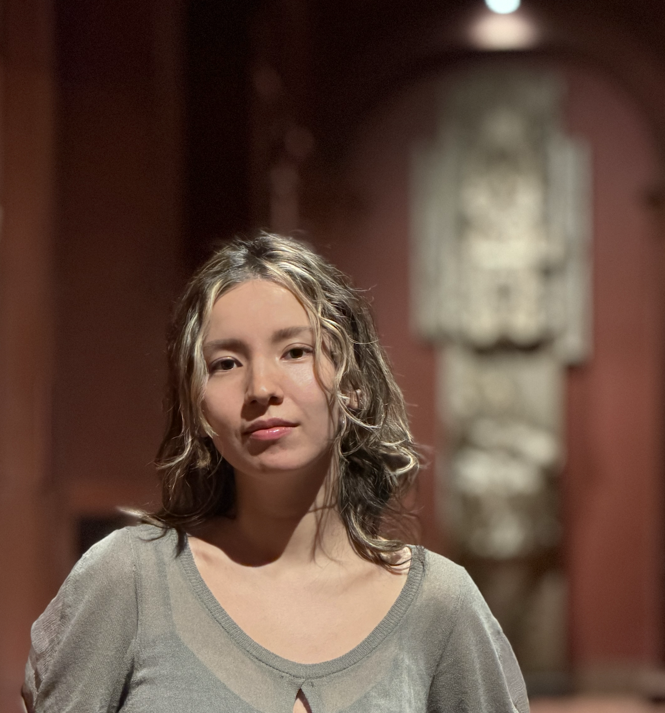

Beatrice Sujin Lee Sampedro is a New York-based archivist focused on Spanish-language library and archival materials. She is currently a Leon Levy Cataloguing Fellow at the Hispanic Society Museum & Library in New York, where she oversees the cataloguing and digitization of the Ruth Matilda Anderson photographic collection, hosted on the open-source DAMS platform, Archipelago. She is completing her MS in Library and Information Science at Pratt Institute, and holds an MA in Patrimonio Audiovisual from Universidad Complutense de Madrid, and a B.A. in History from Cornell University.